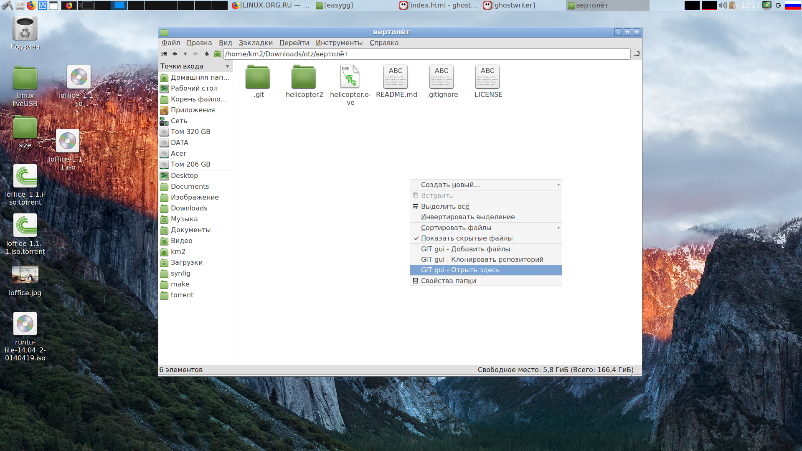

Это простая графическая оболочка для ГИТ, написанная на bash, с использованием технологий yad, lxterminal* и leafpad*
Он написан по принципу KISS, поэтому принципиально не предоставляет сложных и продвинутых функций. Его задача ускорить типовые операции git cli: commit, add, status, pull и push.
Для более сложных функций есть кнопка "Терминал", позволяющая использовать все мысленные и немысленные возможности git
Также в комплекте предоставляется интеграция с файловыми менеджерами, позволяющие через контекстное меню вызывать основной интерфейс, делать git clone в этом каталоге и добавлять файлы в индекс ГИТа (пока поддерживается только 1 файл за раз)
